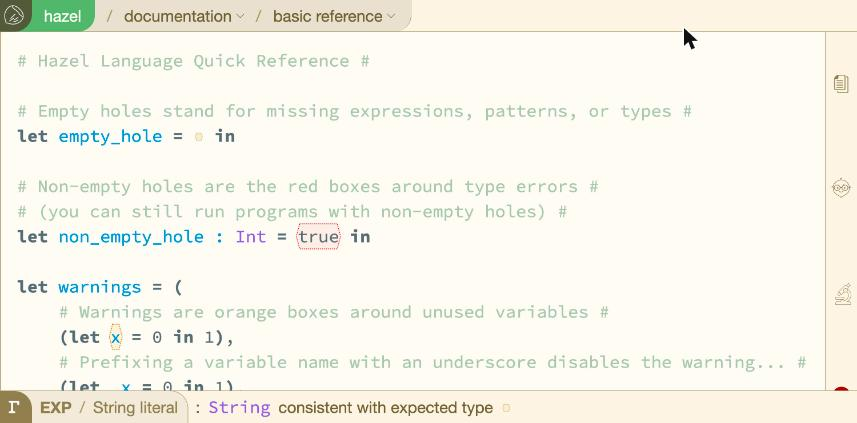
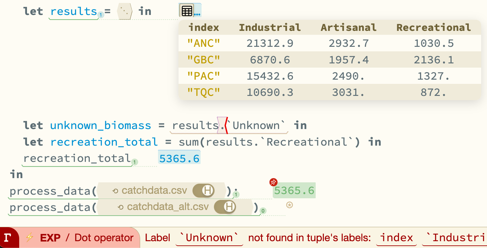
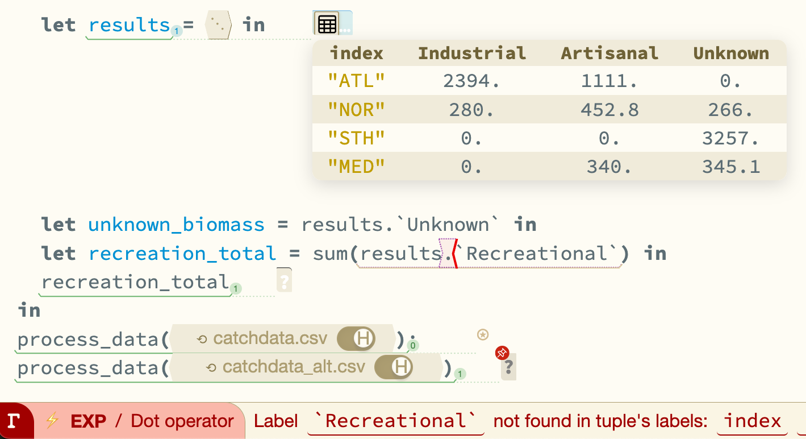

OOPSLA 2026
Alexander Bandukwala · Cyrus Omar
University of Michigan's Future of Programming Lab
Exploring, cleaning and reshaping data in a live programming environment: writing code and running it are interleaved.
but that feedback is
† Out-of-order execution in notebooks: Pimentel et al., MSR 2019 · Chattopadhyay et al., CHI 2020
| date | element | value |
|---|---|---|
| "2010-01-30" | "tmax" | 27.8 |
| "2010-01-30" | "tmin" | 14.5 |
| "2010-02-02" | "tmax" | 27.3 |
| "2010-02-02" | "tmin" | 14.4 |
| date | tmax | tmin |
|---|---|---|
| "2010-01-30" | 27.8 | 14.5 |
| "2010-02-02" | 27.3 | 14.4 |
wide have?The column values are being promoted to the schema.
"tmean" be rejected statically?One answer is to make the type system richer
Type system features
Applied to tables
These are powerful: they can type the operations tables need.
But value-dependent operations need a full scan of the dataset.
And in exploratory analysis, you don't yet know what's in that data.

We build on Hazel, a live and gradually typed programming environment.
Hazel Lab Hazel + structural operations + live typing + rich probes
B2T2 Lu, Greenman & Krishnamurthi 2022
Example tables, programs and error scenarios — and a Table API of 49 operations.
Can our type system express the operation?
Can it enforce its constraints?
one operation from the Table API
| operations expressible | preconditions enforced | postconditions enforced | |
|---|---|---|---|
| Hazel | 17 / 49 | 4 / 72 | 29 / 142 |
one operation from the Table API
to_lvs: tuple to listEach entry becomes a label–value pair, the
label a string.from_lvs: list to tupleBuilds a tuple back from label–value
pairs.to_lvs returns[(label=String, value=τ)]from_lvs returns
?Labels are determined at runtime| operations expressible of 49 |
preconditions enforced of 72 |
postconditions enforced of 142 |
|
|---|---|---|---|
| Hazel | 17 | 4 | 29 |
| Hazel Lab | 49* | 5 | 38 |
Every operation is at least partially expressible, but most constraints go unchecked.
The paper also reports an intermediate ablation, Hazel with tuple extension.
* four only partially expressible, e.g.
leftJoin requires the right table to have at least one row
In a live programming environment, we have dynamic values. We should use them to bolster static types.
? is consistent with every type, so static analysis has nothing to report.
let sum : [Int] -> Int = ... in
let to_string(d : (String, ?)) =
case d (String, ?)
| ("int", v) => string_of_int(v) Int
| ("bool", v) => string_of_int(v) Bool
| ("nums", v) => string_of_int(sum(v)) [Float]
| (_, v) => "Unknown: " ++ v ?
end
in
to_string("int", 1);
to_string("string", "hello");
to_string("bool", true);
to_string("nums", [1., 2.]);
map([("string", "world"), ("bool", false), ("nums", [])], to_string)
The opening example again, with a
report that is never called.
report is never
called.let readings = [(id="MX17004", element="tmax", value="27.8"), …] in let wide = [(index=String, tmax=String, tmin=String)] pivot_table(readings, …) in let report() = wide.tmean in length(wide)
| operations expressible of 49 |
preconditions enforced of 72 |
postconditions enforced of 142 |
||
|---|---|---|---|---|
| without running | after running (live typing) | |||
| Hazel | 17 | 4 | 29 | 29 |
| Hazel Lab | 49* | 5 | 38 | 96† |
No extra annotations, and no richer types in the surface language.
Live typing doesn't help preconditions.
The paper also reports an intermediate ablation, Hazel with tuple extension.
* four only partially expressible, e.g.
leftJoin requires the right table to have at least one row
† assumes each call returns a table with the same schema every time it runs
A domain-specific view of a probed value, where direct manipulation edits the underlying syntax.
An exploratory lab study with users familiar with statically typed functional programming. Not intended to assess transfer to data scientists without training.
Every response at least neutral: 24 of 28 positive, none negative.
All seven were already fluent in statically typed functional programming.
Not intended to assess transfer to data scientists without that training, many of whom work in Python or R.
live typing
rich probes
live typing
rich probes
Scalability
summary
hazel.org/build/tables-study
Hazel Lab in your browser, start with the tutorial
Artifact on Zenodo: 10.5281/zenodo.21458220
The same operations on a row whose type is unknown:
let x : ? = (a=1, b=2, 3, c=4)
| example | type | value |
|---|---|---|
(a=1, b=2) ... (b=3, c=4) | ⇒(a=Int, b=Int, c=Int) | (a=1, b=3, c=4) |
project_labels((a=1, b=2, 3, c=4), `a`, `b`) | ⇒(Int, Int) | (1, 2) |
omit_labels((a=1, b=2, 3, c=4), `b`, `c`) | ⇒(a=Int, Int) | (a=1, 3) |
omit_all_labels((a=1, b=2, 3, c=4)) | ⇒(Int, Int, Int, Int) | (1, 2, 3, 4) |
| example | type | value |
|---|---|---|
x ... (b=3, c=4) | ⇒? | (a=1, b=3, 3, c=4) |
project_labels(x, `a`, `b`) | ⇒(?, ?) | (1, 2) |
omit_labels(x, `b`, `c`) | ⇒? | (a=1, 3) |
omit_all_labels(x) | ⇒? | (1, 2, 3, 4) |
These are primitives rather than library functions, because labels are not first-class values in Hazel.
When the argument's type is unknown, so is the result's.
project_labels still knows how many
entries it returns, because the labels are written in the source.
The values are unaffected.
Each result is computed correctly at runtime. Only the static type has lost the information.
| Scala + IDE | Polynote | Jupyter + pandas | Hazel Lab | |
|---|---|---|---|---|
| function barrierno type-directed services inside a function | ● | ◐ | ○ | ● |
| distal feedbackerrors reported far from the cause, and only after running | ◐ | ◐ | ○ | ◐ |
| external schemadata parsed at runtime, so its schema is invisible to static analysis | ◐ | ◐ | ◐ | ● |
| expressivitystructural table operations are hard to type statically | ◐ | ◐ | ◐ | ● |
| out-of-order executionfeedback from execution history rather than from the program | ● | ◐ | ○ | ● |
No existing system addresses all five. Our own row is partial on distal feedback: live typing shortens the spatial distance and not the temporal one — you still wait for the program to finish.
(Int, ?) ⊓ (?, String) = (Int, String) (Int, ?) ⊔ (?, String) = (?, ?)
More precise as you go down. The meet of two observations is the highest type below both.
anylet x : ? = "" in let y = [x, 1] in …
y : [Int]
The unknown type is a placeholder for something more precise, so it gives way
to the Int beside it.
const x : any = ""; const y = [x, 1];
y : any[]
any is absorbing: it propagates outward and erases
the information its neighbors carried.
to_lvs is typedA static error if the argument is not a tuple. Otherwise the value type is the meet of the entry types, falling back to the unknown type when they are inconsistent.
to_lvs((a=1, b=2, c=3)) ⤳ [(label=String, value=Int)]
to_lvs((a=?, b=1, c=?)) ⤳ [(label=String, value=Int)]
to_lvs((a=true, b=1, c=2.0)) ⤳ [(label=String, value=?)]
to_lvs((a=(true,?), b=(?,?), c=(?,1.0)))
⤳ [(label=String, value=(Bool, Float))]
The last case is the interesting one: the meet is computed pointwise, so partial information from several entries combines into a type more precise than any single entry supplied.


Applied to two datasets, the schemas are inconsistent, so
no meet exists and the result keeps its static type — no marks. Each probe collects one value
per invocation, so pinning one invocation restricts live typing to that call:
the mark lands on Unknown for the first dataset and moves to
Recreational for the second.
| name | age | quiz1 | quiz2 | midterm | quiz3 | quiz4 | final | average-quiz |
|---|---|---|---|---|---|---|---|---|
| "Bob" | 12 | 8 | 9 | 77 | 7 | 9 | 87 | 8.25 |
| "Alice" | 17 | 6 | 8 | 88 | 8 | 7 | 85 | 7.25 |
| "Eve" | 13 | 7 | 9 | 84 | 8 | 8 | 77 | 8.00 |
buildColumn(gradebook, "average-quiz", (row) => { const quizCols = header(row) .filter((c) => startsWith(c, "quiz")); const scores = quizCols .map((c) => getValue(row, c) as number); return sum(scores) / length(scores); });
Add a column of mean quiz scores. Adapted from B2T2.
gradebook?row?getValue(row, c) return?Statically typing this requires a sophisticated type system.
buildColumnThe gradebook example: a new column named by a
string, computed from the columns whose names start with quiz.